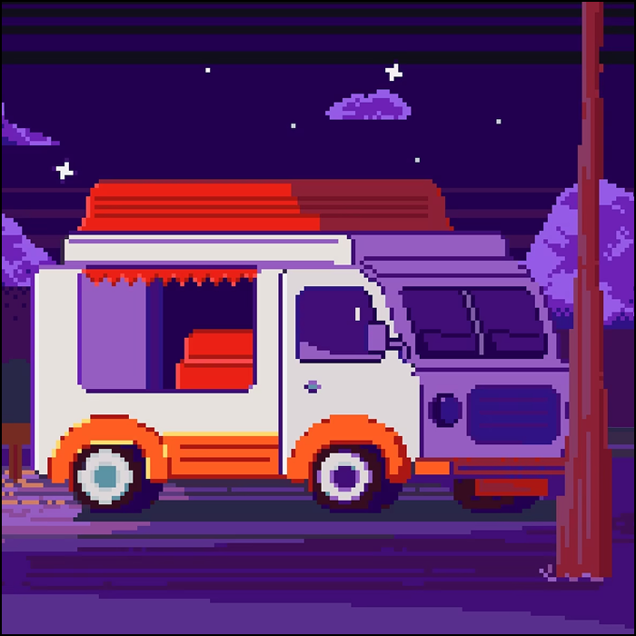

-
Фритрек и нулевой спринт: Подготовка к работе

</html>
-
1 спринт: Я — чистый лист
</html>
-
1 спринт: А если не получится?
<css>
-
2 спринт: Погоня за идеалом
<desigions>
-
2 спринт: О тех, кто рядом
care
-
3 спринт: Обходные стратегии
<support>
-
3 спринт: Когда опускаются руки
<lifes-style: none;>
-
«Сейчас я здесь»
<experience>